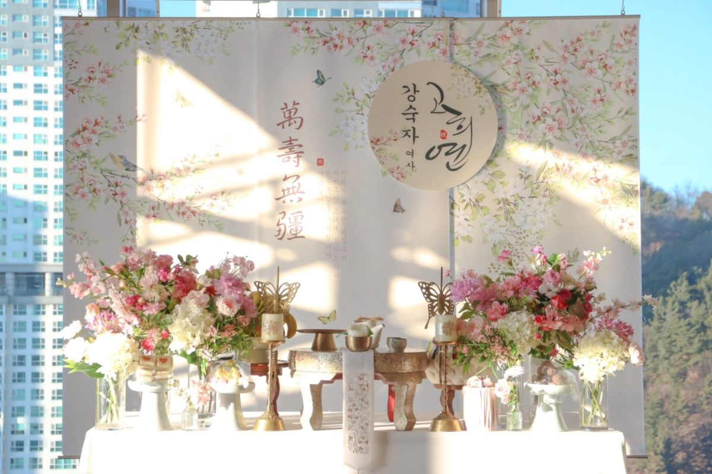

한눈에 보는 장소 고르기 요약
- 10~30명 가족: 한식당 룸이 가장 무난합니다.
- 30명 이상·격식: 호텔·연회장, 넓은 공간이면 테이블 사이즈 UP 고려
- 시간 여유·편안함: 프라이빗 파티룸이나 자택
- 예약 전 필수 확인: 외부 상차림 반입, 설치·철수 가능 시간, 엘리베이터·주차
장소 유형별 비교
| 장소 | 잘 맞는 경우 | 미리 확인할 점 |
|---|---|---|
| 한식당 룸 | 가족 10~30명, 식사와 행사를 한 공간에서 | 룸 단독 사용, 상차림을 놓을 벽면, 이용 시간 |
| 호텔 | 격식 있는 자리, 친지까지 초대 | 외부업체 반입 규정, 설치 시작·철수 마감 시간, 주차 지원 |
| 연회장 | 인원이 많은 잔치 | 공간이 넓어 상차림이 작아 보이지 않는지(사이즈 UP) |
| 프라이빗 파티룸 | 시간 제약 없이 가족끼리 | 식사 방식(출장 뷔페·반입), 의자·테이블 수 |
| 자택 | 부모님 이동이 어려운 경우 | 상차림 놓을 공간, 식사 준비 부담 |
칠순잔치 장소 고를 때
요즘 칠순잔치는 직계 가족 10~30명이 모이는 소규모 행사가 대부분이라 한식당 룸을 가장 많이 선택합니다. 식사와 행사를 한 공간에서 할 수 있어 동선이 짧고, 가족끼리 편하게 이야기 나누기 좋습니다.
10~20명 규모라면 모두가 부모님을 볼 수 있는 좌석 배치와, 전체 가족이 한 번에 설 수 있는 사진 공간이 있는지 꼭 확인하세요. 식사가 좋아도 상차림 설치 시간이 지나치게 짧거나 사진 공간이 없으면 당일이 급해질 수 있습니다.
팔순잔치 식당 예약 전 확인할 7가지
팔순은 부모님이 덜 움직이고 편하게 앉아 계실 수 있는지가 가장 중요합니다. 예약 전에 아래 항목을 식당에 물어보세요.
- 룸 단독 사용 — 다른 손님과 섞이지 않는 독립된 공간인지
- 의자 형태 — 좌식이 아닌 의자석인지, 등받이·팔걸이가 있는지
- 화장실 거리 — 룸에서 화장실까지 가까운지
- 엘리베이터 — 계단 없이 이동할 수 있는지
- 주차 — 건물 앞 하차가 가능한지, 주차 지원 시간
- 외부 상차림 반입 — 출장 상차림 설치가 허용되는지
- 이용 시간 — 설치부터 철수까지 포함해 충분한 시간인지
팔순 주인공이 오래 이동하거나 서 계시지 않도록 식사 자리와 상차림·사진 공간을 가까이 두는 것이 좋습니다. 자세한 준비 순서는 대전 팔순잔치 준비를 참고하세요.
호텔·연회장 예약 담당자에게 물어볼 것
- ☐ 외부 상차림 업체 반입이 가능한가요?
- ☐ 테이블 규격(가로 길이)은 어떻게 되나요?
- ☐ 설치는 몇 시부터, 철수는 몇 시까지 가능한가요?
- ☐ 업체 차량 주차와 짐 반입 동선은 어떻게 되나요?
- ☐ 가족 차량 주차 지원은 몇 시간인가요?
공간이 넓은 호텔·연회홀에서는 기본 크기 상차림이 작아 보일 수 있어 테이블 사이즈 UP(5만원, VAT 별도)을 많이 추가합니다. 행사장 사진이나 테이블 크기를 미리 보내주시면 현장에 맞는 구성을 상담해 드립니다.
장소가 정해지면 바로 하세요
- 상차림 일정 확정 — 인기 날짜는 빨리 마감되니 장소 예약 직후 함께 잡으세요.
- 공간 정보 공유 — 룸 사진, 테이블 크기, 설치 가능 시간을 파티후에 알려주세요.
- 동선 정하기 — 부모님 자리, 상차림 위치, 가족사진 위치를 미리 정합니다.
예약 전 체크리스트
- ☐ 행사 날짜와 시작 시간
- ☐ 행사 장소(식당·호텔명 또는 주소)
- ☐ 예상 인원
- ☐ 장소의 외부 상차림 반입 가능 여부와 설치 가능 시간
- ☐ 사진·사회·생화장식 등 필요한 추가 구성
이 다섯 가지만 알려주시면 상담이 훨씬 빠릅니다.
장소별 실제 파티후 현장




더 많은 현장은 행사 사례에서 볼 수 있습니다.
자주 묻는 질문
식당이나 호텔에서도 출장 상차림이 가능한가요?
가능합니다. 다만 장소마다 외부 상차림 반입 허용 여부와 설치·철수 가능 시간이 다르므로 장소 예약 전에 꼭 확인해 주세요.
칠순잔치 장소로 가장 많이 하는 곳은 어디인가요?
가족 10~30명 규모가 많아 한식당 룸을 가장 많이 선택합니다. 인원이 많거나 격식을 갖추고 싶다면 호텔·연회장을 고려하세요.
넓은 연회장에서는 상차림이 작아 보이지 않나요?
공간이 넓으면 기본 크기가 작아 보일 수 있어 테이블 사이즈 UP 옵션(5만원, VAT 별도)을 추천합니다.
팔순잔치 식당은 무엇을 먼저 봐야 하나요?
룸 단독 사용, 의자 형태, 화장실 거리, 엘리베이터, 주차, 외부 상차림 반입, 이용 시간을 예약 전에 확인하세요. 부모님이 덜 움직이시는 동선이 가장 중요합니다.
자택에서도 상차림이 가능한가요?
상차림을 놓을 공간이 있다면 가능합니다. 공간 사진을 보내주시면 맞는 구성을 상담해 드립니다.
상차림 설치는 몇 시에 하나요?
행사 시작 전에 미리 도착해 상차림을 완성해 둡니다. 장소별 입장 가능 시간이 달라 정확한 도착 시간은 상담 때 정합니다.